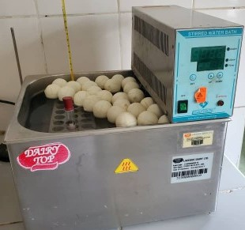

WAKANDA DIARY FIRM
WAKANDA DIARY FIRM
Wakanda diary firm is a partnership bussiness owned and managed by three people from Polly family
It was established on 04th october 2003 and was set up in Kabwohe town, kagango division in Sheema district
It is located along Mbarara-Kasese highway opposite Sheema broadcasting radio
Wakanda diary firm offers products that include:
Fresh milk
Butter
Yorghurt
Chees
Ghee
Cream
Ice cream

For more production it has other branches in western uganda
Mbarara branch in Katete near Vine motel
Ibanda branch in kagongo town
Ishaka branch in Bushenyi
Mitooma branch in mitooma town
Isingiro branch in New congo
And other out lets country wide
To save customers expenses it also has deliver vans that deliver
goods 
Vision of the firm
"To provide and distribute quality products to customers at affordable price"
Mission of the firm
Leading the market of diary products in western,central and abroad
Objectives of the firm
Meeting customers needs
Providing affordable and quality products
Providing jobs to the growing nation
Link to my second page